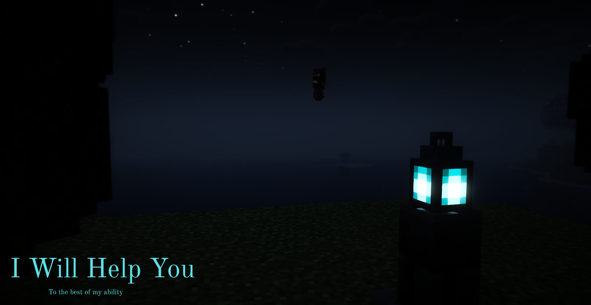

Daedalus was a brilliant inventor and craftsman, known for creating the Labyrinth on the island of Crete, a massive maze built to imprison the Minotaur. However, after helping Theseus escape the Labyrinth (by giving Ariadne the famous thread), King Minos imprisoned Daedalus and his son Icarus in a tower, fearing they might reveal its secrets.
Being the genius he was, Daedalus devised an escape—not by land or sea, but by air. He crafted two sets of wings out of feathers and wax, one for himself and one for Icarus. Before they took off, he gave Icarus a clear warning:
""Do not fly too high, or the sun will melt the wax.”
With the wings on, they took to the skies—soaring above the sea. But the thrill of flight overtook Icarus. The feeling of freedom was intoxicating. Ignoring his father's warning, he flew too close to the sun. The heat melted the wax holding his wings together, and Icarus plummeted into the sea, drowning in the Icarian Sea.
